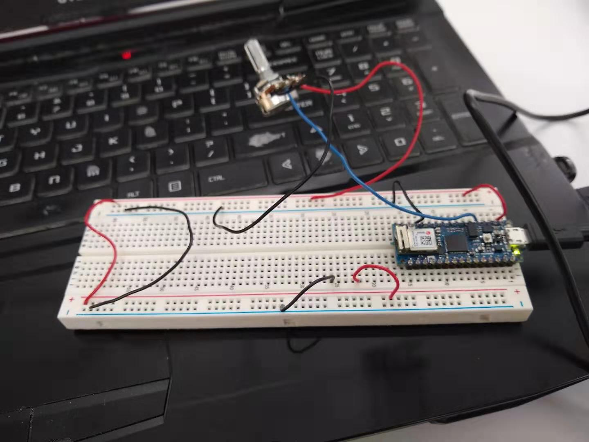

This week's assignment was to get a sketch you've made in p5 to respond to an arduino through serial communication. I'm not taking the first part of ICM, so... I was definitely rusty on P5. I ended up making a simple little sketch where the position of a regular ol' potentiometer increases and decreases a fader in a P5 sketch. This was in preparation for my midterm. Not super complex, but proves I've got serial communication under my belt, at least.
 Comments? Questions? Concerns? Email me here!